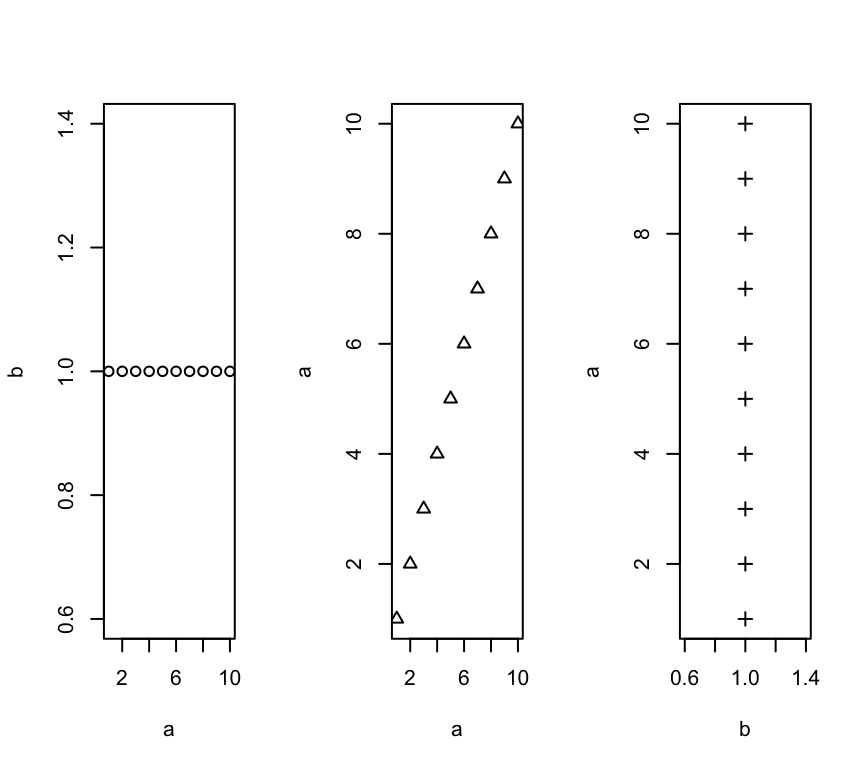
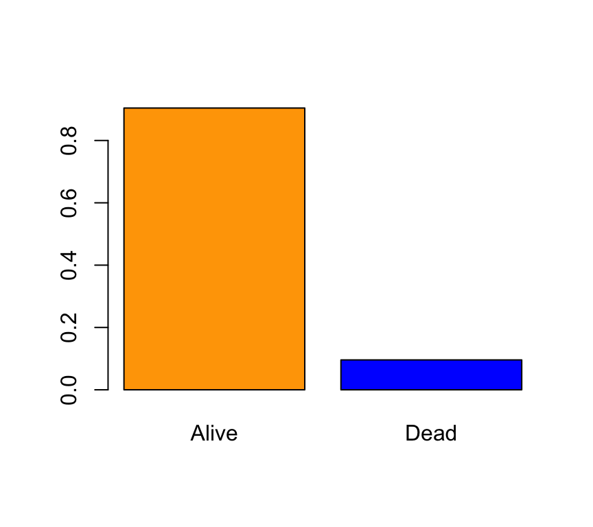

Introducción al análisis de datos con R
1 Gráficos en R: introducción
R dispone de múltiples funciones diseñadas para la representación gráfica de datos. Estas funciones se dividen en dos grandes grupos: funciones gráficas de alto nivel y de bajo nivel. La diferencia fundamental es que las funciones de alto nivel son las que generan gráficos completos, mientras que las de bajo nivel se limitan a añadir elementos a un gráfico existente (por tanto creado por una función de alto nivel).
Una página de referencia, con múltiples paquetes y ejemplos para hacer gráficos en R está en este link.
El paquete graphics (que se carga en memoria cada vez que arrancamos R) contiene un buen número de funciones de alto y bajo nivel para generar gráficos. Numerosos paquetes -plotrix, scatterplot3D, rgl, maps, shapes, y sobre todo ggplot2- contienen muchísimas más funciones gráficas que mejoran y complementan las que vienen por defecto con R.
1.1 Funciones gráficas de alto nivel
Estas funciones son las que generan gráficos completos. Entre las más utilizadas podemos citar plot() (gráficos de nubes de puntos, entre otros), hist() (histogramas), barplot() (diagramas de barras), boxplot() (diagramas de caja y bigote), pie() (diagrama de sectores) o pers() (superficies en 3D). Todas estas funciones disponen de multitud de argumentos que permiten controlar las etiquetas de los ejes, sus límites, títulos, tamaño, colores, etc.:
xlim,ylim: controlan, respectivamente, la extensión de los ejes X e Y. Así xlim=c(0,10) indica que el eje X se extiende de 0 a 10; ylim=c(-5,5) indica que el eje Y va de -5 a 5. Si no se incluyen estos valores, R los ajusta por defecto de modo que se incluyan todos los valores disponibles en el dataframe.xlabeylabespecifican las etiquetas para los ejes X e Y respectivamente.mainindica el título del gráfico.subpermite especificar un subtítulo.
Los ejemplos que se muestran más abajo permiten ver como utilizar estas opciones.
Dos argumentos importantes que son comunes a la mayoría de gráficos de alto nivel son los siguientes:
add=TRUE: fuerza a la función a actuar como si fuese de bajo nivel (intenta superponer la figura que genera a un gráfico ya existente). Esta opción no está disponible para todas las funciones.typeIndica el tipo de gráfico a realizar. En concreto:- type=“p” representa puntos (opción por defecto)
- type=“l” representa líneas
- type=“b” (both, ambos) representa puntos unidos por líneas.
- type=“n” No dibuja nada.
1.2 Funciones gráficas de bajo nivel:
Permiten añadir líneas, puntos, etiquetas… a un gráfico ya existente. Son de gran utilidad para completar un gráfico. Entre estas funciones cabe destacar:
lines(): Permite añadir lineas (uniendo puntos concretos) a una gráfica ya existente.abline(): Añade lineas horizontales, verticales u oblicuas, indicando pendiente y ordenada.points(): Permite añadir puntos.legend(): Permite añadir una leyenda.text(): Añade texto en las posiciones que se indiquen.grid(): Añade una malla de fondo.title(): permite añadir un título o subtítulo.
1.3 Argumentos comunes a las funciones gráficas de alto y bajo nivel
Los siguientes argumentos opcionales son comunes a muchas funciones gráficas de alto y bajo nivel. Sus valores por defecto pueden obtenerse ejecutando la función par(). Se puede encontrar el significado y valores posibles de cada uno de estos argumentos (y muchos más) ejecutando help(par).
pch: Indica la forma en que se dibujaran los puntos (círculo, cuadrado, estrella, etc). El listado de valores y formas disponibles puede verse mediante help(points)lty: Indica la forma en que se dibujan las líneas (continua, a trazos, …).lwd: Ancho de las líneas.col: Color usado para el gráfico (ya sea para puntos, líneas…). Puede vers un listado completo de los colores disponibles en R ejecutando la función colors(). help(colors) explica como obtener aún más colores. Este documento contiene una muestra de cada color.font: Fuente a usar en el texto.las: Cambia el estilo de las etiquetas de los ejes (0 paralelo a los ejes, 1 siempre horizontales, 2, perpendiculares a los ejes, 3 siempre verticales)
1.4 Ejemplos de funciones gráficas de alto nivel
Podemos destacar, entre las más utilizadas:
1.4.1 plot()
Esta función ofrece muchas variantes dependiendo del tipo de objeto al que se aplique. El caso más simple corresponde a la representación de dos variables x e y. En tal caso, plot(x,y) representa un diagrama de dispersión de puntos de y frente a x.
A modo de ejemplo se muestra a continuación un gráfico de la esperanza de vida (LifeExpectancy, que será nuestra variable y) frente al índice de felicidad (Happiness, que es la x) en una muestra de 143 países. Los datos se encuentran en el dataframe(HappyPlanetIndex) del paquete (Lock5Data) (consultar help(HappyPlanetIndex) para ver las variables en este dataframe, y http://www.happyplanetindex.org/about/ para más información sobre este estudio):
if (!is.element("Lock5Data", installed.packages()[,1])){
install.packages("Lock5Data", repos = "http://mirror.fcaglp.unlp.edu.ar/CRAN/")
}
library(Lock5Data)
data(HappyPlanetIndex)
attach(HappyPlanetIndex)
plot(Happiness,LifeExpectancy,pch=19,col="red")
1.4.2 hist()
Esta función permite dibujar histogramas de frecuencias para variables continuas. Por ejemplo, el histograma de los niveles de felicidad en los distintos países de la muestra se obtiene fácilmente como:
data(HappyPlanetIndex)
attach(HappyPlanetIndex)
hist(Happiness,col="darkolivegreen1")
En el mismo paquete Lock5Data podemos encontrar el dataframe SalaryGender que contiene una muestra de 100 profesores universitarios de EEUU, 50 hombres y 50 mujeres; para cada uno se tiene el salario anual (en miles de dólares), la edad y la variable PhD que vale 1 si el profesor es doctor y 0 si no lo es. Podemos ver la distribución de salarios entre hombres y mujeres mediante un histograma combinado utilizando la función histStack() del paquete plotrix:
data(SalaryGender)
attach(SalaryGender)
Gender=factor(Gender,levels=c(0,1),labels=c("Female","Male"))
library(plotrix)
histStack(Salary,Gender,legend.pos="topright")
1.4.3 barplot()
Se utiliza para dibujar diagramas de barras. El siguiente ejemplo muestra el número de países en cada una de las 7 regiones en que se dividió el planeta para el estudio de los niveles de felicidad:
barplot(table(Region),xlab="Region",main="Happiness level by region", col=rainbow(10))El paquete plotrix contiene la función barp() que permite dar “volumen” a la barras:
barp(table(Region),col="lightblue",cylindrical=TRUE,shadow=TRUE)
Es posible construir diagramas de barras por categorías; podemos, por ejemplo representar la frecuencia de doctores por sexo utilizando los datos del dataframe SalaryGender:
PhD<-factor(PhD,levels=c(0,1),labels=c("PhD","non PhD"))
barplot(table(Gender,PhD),beside=TRUE,legend.text=TRUE,col=c("pink","cyan"))
1.4.4 pie()
Aporta la misma información que el diagrama de barras, pero en forma de diagrama de sectores:
pie(table(Region))
El paquete plotrix permite elaborar diagramas de sectores en 3D mediante la función pie3D:
pie3D(table(Region))
1.4.5 boxplot()
Lleva a cabo la representación de gráficos de “caja y bigote”. El siguiente ejemplo muestra el reparto de los niveles de felicidad entre las distintas regiones del globo:
boxplot(Happiness~Region,col="gold",xlab="Region",ylab="Happiness level",
main="Average happiness level by region")
1.4.6 persp()
Esta función realiza representaciones tridimensionales (superficies). El dataframe volcano que se distribuye junto con la instalación básica de R (ver help(volcano)) contiene información topográfica del volcán Maunga Whau en Auckland, Nueva Zelanda, definida sobre una malla de 870×610 metros, con un nodo cada 10 metros. Podemos trazar el perfil topográfico de este volcán mediante:
persp(x = 10*(1:nrow(volcano)), y=10*(1:ncol(volcano)), z=3*volcano,
theta = 135, phi = 30, col = "green3", scale = FALSE,
ltheta = -120, shade = 0.75, border = NA, box = FALSE, main="Volcán Maunga Whau, Auckland, NZ")
1.4.7 la función plot
Representación de nubes de puntos
La función plot es una función genérica para la representación gráfica de objetos en R. Los gráficos más sencillos que permite generar esta función son nubes de puntos (x,y). Para ver un ejemplo utilizaremos el dataframe trees, disponible en el paquete datasets. Este dataframe contiene datos de tres variables medidas en una muestra de 31 cerezos: Girth (diámetro del tronco en pulgadas), Height (altura del árbol en pies) y Volume (volumen de madera en el árbol). Mostramos los datos a continuación:
data(trees)
trees## Girth Height Volume
## 1 8.3 70 10.3
## 2 8.6 65 10.3
## 3 8.8 63 10.2
## 4 10.5 72 16.4
## 5 10.7 81 18.8
## 6 10.8 83 19.7
## 7 11.0 66 15.6
## 8 11.0 75 18.2
## 9 11.1 80 22.6
## 10 11.2 75 19.9
## 11 11.3 79 24.2
## 12 11.4 76 21.0
## 13 11.4 76 21.4
## 14 11.7 69 21.3
## 15 12.0 75 19.1
## 16 12.9 74 22.2
## 17 12.9 85 33.8
## 18 13.3 86 27.4
## 19 13.7 71 25.7
## 20 13.8 64 24.9
## 21 14.0 78 34.5
## 22 14.2 80 31.7
## 23 14.5 74 36.3
## 24 16.0 72 38.3
## 25 16.3 77 42.6
## 26 17.3 81 55.4
## 27 17.5 82 55.7
## 28 17.9 80 58.3
## 29 18.0 80 51.5
## 30 18.0 80 51.0
## 31 20.6 87 77.0El comando plot() ejecutado directamente sobre el dataframe muestra las nubes de puntos correspondientes a todas las posibles parejas de variables:
plot(trees)
Si sólo deseamos representar la altura del árbol frente al diámetro del tronco, especificamos simplemente estas dos variables:
with(trees,plot(Girth,Height))
1.4.8 Diagramas de barras (barplots)
Para ver este gráfico usaremos los pacientes de cancer de mama (BRCA_all_data). En concreto, nos interesa ver el porcentaje de pacientes vivos y muertos.
Nuestro objetivo en esta sección será construir el siguiente diagrama de barras con la variable vital_status. A esta gráfica la denominaremos “gráfica patrón” a lo largo del texto.

Primer Paso
En primer lugar ejecutamos help(barplot) para leer la información que proporciona la ayuda de R sobre la función barplot. Para empezar, debemos pasar como argumento a dicha función los datos de la variable que queremos representar. En concreto, debemos especificar las frecuencias relativas de las categorías presentes en la variable especie. El cálculo de las frecuencias relativas se realiza a través de las funciones table() y prop.table().
barplot(prop.table(table(BRCA_all_data$vital_status)))
Color
En la gráfica anterior ya tenemos representado el mismo contenido que en la gráfica patrón. Vamos ahora a darle color. El argumento que controla los colores de las barras del barplot es ´col´:
barplot(prop.table(table(BRCA_all_data$vital_status)),col=c("orange","blue"))Leyenda Ahora añadimos una leyenda utilizando el argumento legend.text:
barplot(prop.table(table(BRCA_all_data$vital_status)),col=c("orange","blue"),
legend.text=c("Vivos","Muertos"))
Ajustando los ejes para dejar sitio a la leyenda
La leyenda que que acabamos de colocar “pisa” una de las barras del gráfico. En la gráfica patrón podemos observar que el eje de ordenadas tiene una amplitud mayor, que va de 0 a 0.8 unidades. Para cambiar los límites del eje de ordenadas utilizamos el argumento ylim:
barplot(prop.table(table(BRCA_all_data$vital_status)),col=c("orange","blue"),
legend.text=c("Vivos","Muertos"),ylim=c(0,0.8))
Otra opción es ampliar el eje X, de modo que quede sitio a la izquierda para colocar la leyenda. El problema, en principio, es que como este es un eje de categorías, no muestra valores numéricos, así que ¿como lo ampliamos?. La solución estriba en saber que barplotdevuelve de modo invisible las coordenadas de las posiciones de la base. La manera de capturar dichas coordenadas es asignar el gráfico a una variable y mostrar los valores de ésta (si además indicamos plot=FALSE nos ahorramos que R nos repita el gráfico, aunque tampoco tiene mayor importancia):
xCoords<-barplot(prop.table(table(BRCA_all_data$vital_status)),col=c("orange","blue"),
legend.text=c("Vivos","Muertos"),ylim=c(0,0.8), plot=FALSE)
xCoords## [,1]
## [1,] 0.7
## [2,] 1.9Vemos, por tanto, que las barras están en las posiciones 0.7 y 1.9. Probamos a reconstruir el gráfico fijando la extensión del eje X como xlim=c(0,3.3) (si no quedamos satisfechos de entrada podemos probar unos cuantos valores):
barplot(prop.table(table(BRCA_all_data$vital_status)),col=c("orange","blue"),
legend.text=c("Vivos","Muertos"),xlim=c(0,3.3))
Título
El título se especifica mediante la opción main, escribiendo el texto del título entre comillas:
barplot(prop.table(table(BRCA_all_data$vital_status)),col=c("orange","blue"),
legend.text=c("Vivos","Muertos"),ylim=c(0,0.8),main="Mujeres con cancer de mama")
Texto en el eje de ordenadas
Mediante el argumento ylab especificamos el texto (también entre comillas) que deseamos como etiqueta del eje Y:
barplot(prop.table(table(BRCA_all_data$vital_status)),col=c("orange","blue"),
legend.text=c("Vivos","Muertos"),ylim=c(0,0.8),main="Mujeres con cancer de mama", ylab ="Frecuencias Relativas")
Orientación de las etiquetas en los ejes
El párametro las cambia la orientación de las etiquetas del eje de ordenadas (consultar help(par) para ver las distintas opciones)
barplot(prop.table(table(BRCA_all_data$vital_status)),col=c("orange","blue"),
legend.text=c("Vivos","Muertos"),ylim=c(0,0.8),main="Mujeres con cancer de mama", ylab ="Frecuencias Relativas",las=1)Cambio de la fuente para las letras de las etiquetas
Para cambiar el tipo de fuente que se usa en las letras de las etiquetas del eje de abscisas se utiliza el argumento font.axis (consultar help(par) para ver las distinas fuentes posibles)
barplot(prop.table(table(BRCA_all_data$vital_status)),col=c("orange","blue"),
legend.text=c("Vivos","Muertos"),ylim=c(0,0.8),main="Mujeres con cancer de mama", ylab ="Frecuencias Relativas",las=1,font.axis=4)Exportación de una gráfica
La gráfica se puede observar con más detalle haciendo click en “Zoom”, en área de Files. Y, haciendo click en “Export”, se puede guardar el gráfico en formato .png.
1.4.9 Histogramas
Un histograma es una representación gráfica de la distribución de frecuencias de una variable continua. Consiste en una sucesión de rectángulos levantados sobre un eje que representa los valores de la variable. Cada rectángulo tiene un área proporcional a la frecuencia de valores observada en el intervalo sobre el que se levanta. En esta sección aprenderemos a construir un histograma con R, a superponerle una distribución de probabilidad teórica y otra estimada no paramétricamente, a insertar títulos, etiquetas, etc.
Usaremos los pacientes de cancer de mama (BRCA_all_data). En concreto, nos interesa ver el histograma de las edades de las pacientes.
Construcción del histograma básico
Consultar la ayuda: help(hist). Para empezar,debemos pasar a la función hist los datos de la variable a representar, en nuestro caso la variable age_at_initial_pathologic_diagnosis.
hist(BRCA_all_data$age_at_initial_pathologic_diagnosis, main="Histograma de la edad de las pacientes",xlab="",ylab="Densidad")Definición del eje de ordenadas en frecuencias relativas y color del histograma
El eje de ordenadas muestra por defecto frecuencias absolutas; el gráfico que queremos construir es con frecuencias relativas en este eje. Para ello utilizamos la opción freq=FALSE; además le damos color al histograma mediante col=“lightcyan”
hist(BRCA_all_data$age_at_initial_pathologic_diagnosis,freq=FALSE, col="lightcyan", main="Histograma de la edad de las pacientes",xlab="",ylab="Densidad")
Incremento de la longitud del eje de ordenadas
Para que en la gráfica haya espacio para la leyenda, alargamos el eje de ordenadas mediante la opción ylim:
hist(BRCA_all_data$age_at_initial_pathologic_diagnosis,freq=FALSE, col="lightcyan",ylim=c(0,0.05), main="Histograma de la edad de las pacientes",xlab="",ylab="Densidad")Estimación de la función de densidad de la variable mediante un estimador de nucleo
El estimador de núcleo de la función de densidad del peso eviscerado se calcula mediante density(BRCA_all_data$age_at_initial_pathologic_diagnosis). Para superponer esta función al histograma utilizaremos la función de bajo nivel lines; además dibujamos la línea con grosor lwd=2 y de color rojo:
hist(BRCA_all_data$age_at_initial_pathologic_diagnosis,freq=FALSE, col="lightcyan",ylim=c(0,0.05), main="Histograma de la edad de las pacientes",xlab="",ylab="Densidad")
lines(density(BRCA_all_data$age_at_initial_pathologic_diagnosis),col="red",lwd=2)
Ajuste de una función de densidad normal con media y desviación estándar estimadas a partir de los datos
Ajustamos también a nuestros datos una función de densidad normal con media igual a la media estimada de la edad y desviación típica también igual a la observada en la muestra.
hist(BRCA_all_data$age_at_initial_pathologic_diagnosis,freq=FALSE, col="lightcyan",ylim=c(0,0.05), main="Histograma de la edad de las pacientes",xlab="",ylab="Densidad")
lines(density(BRCA_all_data$age_at_initial_pathologic_diagnosis),col="red",lwd=2)
curve(dnorm(x,mean=mean(BRCA_all_data$age_at_initial_pathologic_diagnosis),sd=sd(BRCA_all_data$age_at_initial_pathologic_diagnosis)),
add=TRUE, col="blue", lwd=2)
Leyenda
Por último añadimos una leyenda explicando qué representa cada curva: